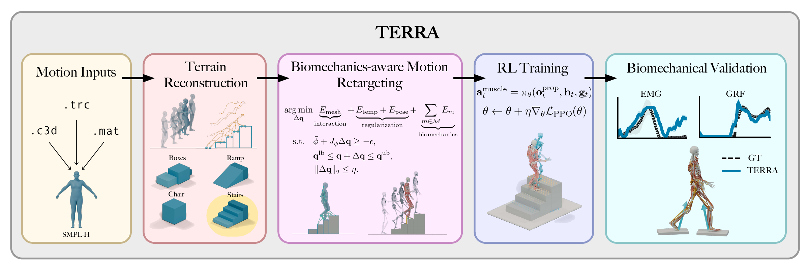

Abstract
Recent advances in musculoskeletal modeling and reinforcement learning have enabled muscle-actuated agents to reproduce increasingly complex human motions. Yet these capabilities remain largely confined to flat ground, in part because motion datasets rarely include aligned terrain geometry and because retargeting terrain interactions to complex musculoskeletal bodies is challenging.
We present TERRA, an end-to-end pipeline for terrain-aware retargeting and control of musculoskeletal locomotion. From kinematic trajectories alone, TERRA combines terrain priors, estimated contacts, and negative free-space evidence to recover task-relevant support geometry. TERRA further considers anatomical, tendon-continuity, and contact constraints during retargeting. Using the resulting motion-terrain pairs from five datasets, we successfully train a single muscle-actuated control policy on the 9.4-hour training split of an 11.3-hour locomotion library. Across reconstruction, retargeting, and held-out tracking benchmarks, TERRA improves terrain accuracy, sharply reduces anatomical and interaction violations, and achieves the highest pooled completion rate over supported terrain families. Overall, TERRA provides a practical route from scene-less motion data to muscle-actuated locomotion over diverse non-flat terrain.
TERRA in three minutes
Methodology

Results
Terrain reconstruction
Recovering task-relevant support geometry from motion alone. Compare ground-truth terrain with the Voronoi baseline and TERRA for stairs, ramps, individual supports, and seats.
Terrain-aware retargeting
Preserving motion while accounting for anatomy and contact with the terrain. Compare GMR, OmniRetarget, and TERRA on three example motions.
Muscle-actuated control
One muscle-actuated policy tracks diverse motions across terrain. Explore 18 examples spanning steep ramps, stairs, seats, individual platforms, narrow beams, and uneven terrain.
Parkour fine-tuning
Four parkour motions featured in the supplementary video. These use specialized fine-tuned policies, separate from the general tracking policy shown above.
BibTeX
@misc{simos2026terra,
title = {{TERRA}: Terrain-Aware Reconstruction, Retargeting
and Control for Musculoskeletal Locomotion},
author = {Simos, Merkourios and Li, Chengkun and
Ziliotto, Bianca and Mathis, Alexander},
year = {2026},
url = {https://cnai.epfl.ch/terra/}
}